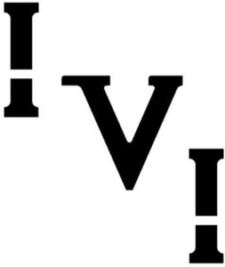

Trade Mark Journal No.2025/024 13 June 2025
WO0000001844874 (14,18,25)
Office of origin: Switzerland
Date of International Registration:3 October 2024
Date of designation in the UK:
3 October 2024

International priority date claimed: 11 April 2024
(Switzerland)
(815308)
- Class 14
- Paste jewelry articles, jewelry; precious and semi-precious stones, pearls; precious metals and their alloys, bracelets [jewelry], necklaces [jewelry], chains [jewelry], medals [jewelry], pendants [jewelry, jewels], earrings [jewelry], rings [jewelry], pendants, tie pins of precious metals; cuff links; key rings and key chains; jewelry cases; boxes of precious metal; jewelry boxes, cases and caskets; horological and chronometric instruments, watches, watchbands; dials for chronograph watches.
- Class 18
- Leather and imitations of leather; animal skins and hides; trunks and suitcases; wallets; purses (coin purses); card cases; briefcases and briefcases of leather and imitations of leather; leather or imitation leather key cases; leisure bags, backpacks, handbags, travelling bags; vanity cases, not fitted; handbags (leatherware), travelling bags of leather, washbags and make-up bags (not accessorized); boxes made of leather; umbrellas; girths of leather.
- Class 25
- Clothing, footwear, headwear; articles of clothing for children; articles of clothing for women; clothing for women; articles of clothing for men; dressing gowns, bathing suits; shorts [clothing], belts [clothing], suspenders, aprons, cardigans, trousers, tracksuits [not for sports], tracksuits [clothing], shirts, tee-shirts, skirts, polo shirts, sweaters, vests, overalls; coats, tailleurs, parkas, coats, jackets, underwear [scarves, gloves], stoles, long scarves, shawls, neckties, collars, bow ties, stocking caps; hats, stocking caps, visors (headwear); knitwear; men's suits; rain ponchos; socks, tights, leggings (trousers); ponchos; sportswear; sportswear; underwear for men and women; underwear, brassieres, socks and brassieres; men's boxer shorts; wrist bands (clothing); beach, ski and sports footwear; slippers; sportswear, boots, sandals, ballet flats (shoes), esparto shoes or sandals; headbands, caps [headwear items].
VANESSA IO MAISON SAGL
Representative: Fabiano, Franke & MGT Sagl, Piazzetta San Carlo 2, CH-6900 Lugano, SWITZERLAND